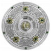

Titulos

8 Campeonatos Alemão:
(1955–56, 1956–57, 1962–63, 1994–95, 1995–96, 2001–02, 2010–11 e 2011-12)

4 Copa da Alemanha:
(1964–65, 1988–89 e 2011-12, 20016-17)
7 Supercopa da Alemanha:
(1989, 1995, 1996, 2008, 2013, 2014 e 2019)

1 Uefa Champions League:
(1996-97)

1 Taça das Taças:
(1965-66)

1 Mundial Interclubes:
(1997)